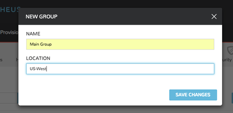
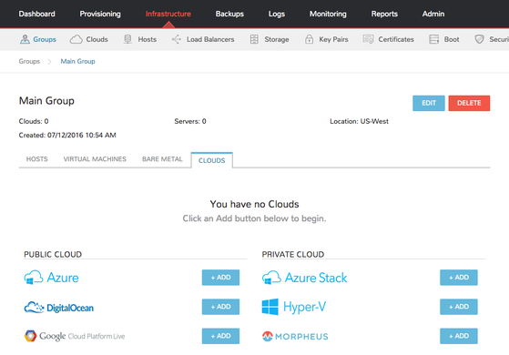
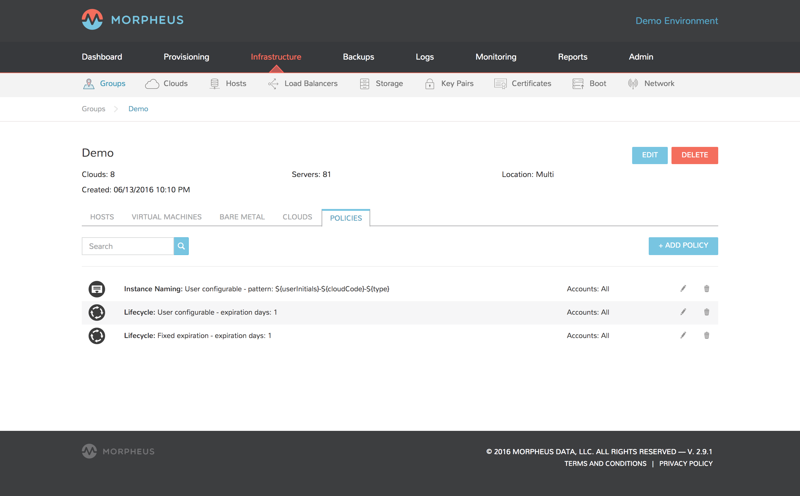
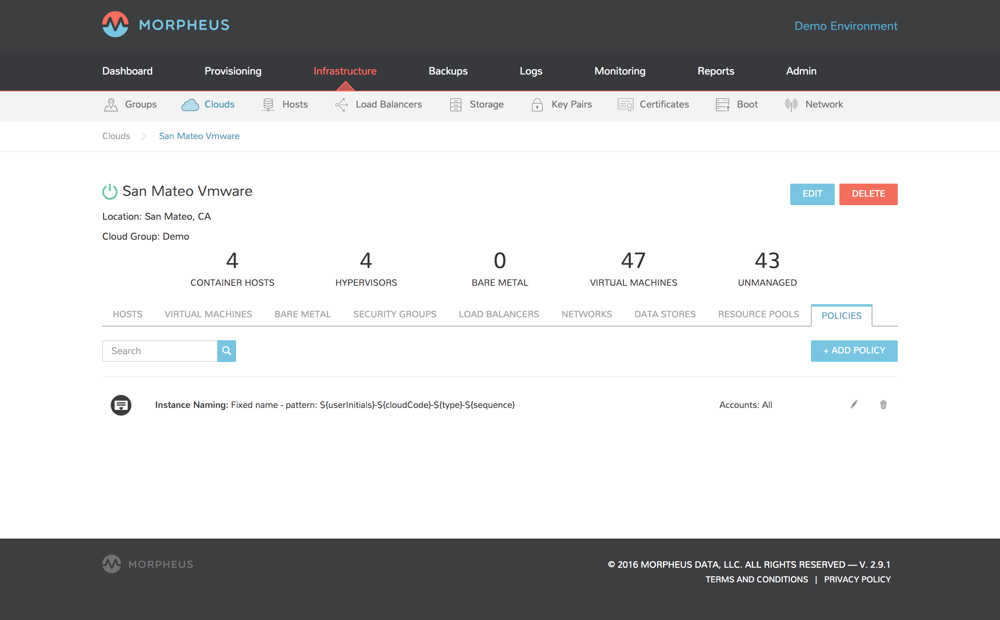
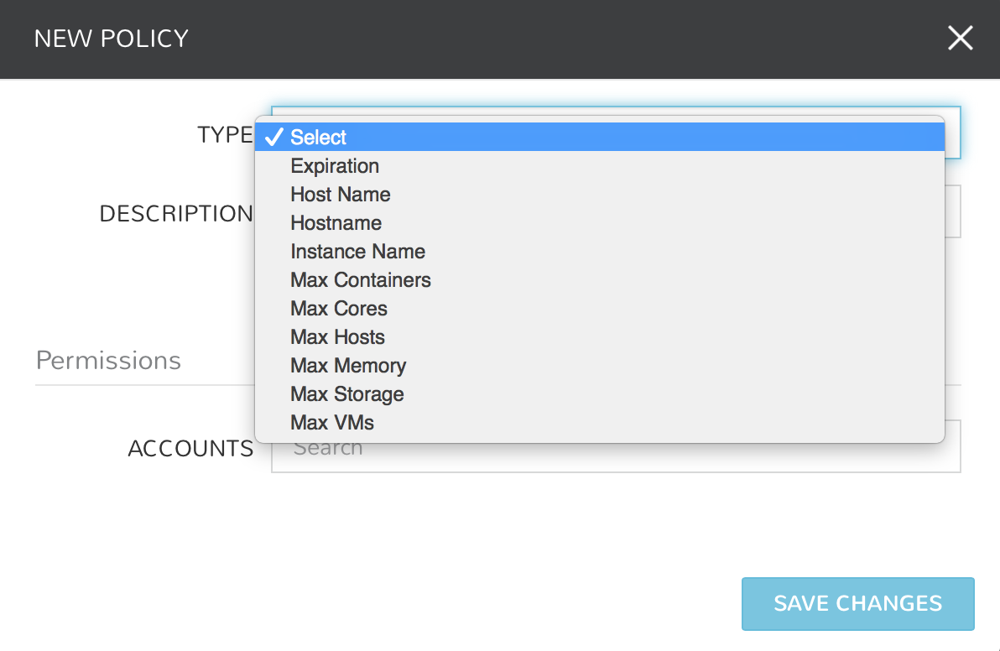

Infrastructure¶
The heart of |morpheus| is the ability to manage provisioning across any infrastructure, from bare metal to virtualized clouds and all the way to public infrastructure.
Groups¶
Overview¶
Groups are used to organize clouds, roles, and hosts.
The Groups view displays all current groups, includes search feature, and also enables the addition of new groups.
To View Groups:
- Select the Infrastructure link in the navigation bar
- Click the Groups link
Adding Groups¶
To add a group:
- Select the Infrastructure link in the navigation bar
- Click the Groups link
- Click the Create Group button
- Input out the Name and Location (optional) fields
- Click the Save Changes button to save
Managing Groups¶
To view a Group:
- Select the Infrastructure link in the navigation bar
- Click the Groups link
- Click the Group name to view/modify
Available tabs in group view
- Hosts
- Lists available hosts in the group and displays power, os, name, type, cloud, ip address, nodes, disc space, memory, and status. You can add a host from this tab panel by clicking Add Host.
- Virtual Machines
- List all Virtual Machines in the Group.
- Bare Metal
- List all Bare Metal Hosts added to the Group
- Clouds
- Lists Clouds added to the Group. Existing Clouds or new Clouds can be added from the Group by clicking Add Cloud.
- Policies
- Lists and allows creation ro managment of Policies applied to the Group.
Edit Group¶
To edit a group:
- Select the Infrastructure link in the navigation bar.
- Click the Groups link.
- Click the name of the group you wish to edit.
- Click the Edit button.
- From the Edit Group Wizard modify information as needed.
- Click the Save Changes button to save.
Delete Group¶
To delete a group:
- Select the Infrastructure link in the navigation bar.
- Click the Groups link.
- Click the name of the group you wish to delete.
- Click the Delete button.
- Note: You will be prompted for confirmation on this action.

User Access¶
User access to Groups is determing by their user Role(s). Group access for Roles can be configured in the Group Access section of a Roles Settings.
Clouds¶
Overview¶
Clouds are integrations or connections to public, private, hybrid clouds, or bare metal servers. Clouds can belong to many groups and contain many hosts. The clouds view a includes search feature and provides the option to edit, delete, and add new clouds. |morpheus| supports most Public Clouds and Private Clouds.
Creating Clouds¶
Clouds can be added from Infrastructure -> Clouds or in Infrastructure -> Groups -> (select Group) -> Clouds. Details on required credentials and settings can be found in the Cloud integrations guides.
Cloud Detail View¶
In the Cloud List View, select the name of a Cloud to display the clouds Detail View.
- EDIT
- Edit the setup configuration of the Cloud.
- REFRESH
- Force a sync with the Cloud. Last sync date, time and duration is shown under the Cloud name.
- DELETE
- Delete the Cloud from |morpheus| IMPORTANT: All Instances and managed Hosts and VM’s must be removed prior to deleting a cloud.
Note
Not all tabs are available for all Cloud Types.
- Hosts
- The hosts tab panel displays available hosts in the cloud and displays power, os, name, type, cloud, ip address, nodes, disc space, memory, and status. You can add a container host from this by clicking the Container Hosts button, add a hypervisor host by clicking the HyperVisor button, or perform actions actions by click the Actions button.
- Virtual Machine
- Displays an Inventory of Existing Instances in your cloud configuration and provides details such as power, os, name, type, cloud, ip address, nodes, disc space, memory, and status.
- Bare Metal
- Setup PXE Boot in the Boot section to add bare metal servers. Once setup you can view information such as power, os, name, type, cloud, ip address, nodes, disc space, memory, and status.
- Security Groups
- The Security Groups tab panel displays a list of existing Security groups in the cloud. You can add a security group to this cloud by clicking the Edit Security Groups button.
- Load Balancers
- The load balancers tab panel displays available load balancers in the cloud and displays the name, description, type, cloud and host. You can add a load balancer from this tab by clicking the Add Load Balancer button.
- Networks
- Displays Networks synced or added to the Cloud.
- DataStores
- Displays Datastores synced or added to the Cloud.
- Resource Pools
- Displays Resource Pools synced from the Cloud.
- Policies
- Manages Policies enforced on the Cloud.
- Container Host Provisions a Docker host into the Cloud, or adds an existing Docker Host (manual) to the Cloud. KVM hosts are also available for |morpheus| and Bare Metal cloud types.
- Hypervisor Add an existing Hypervisor to the Cloud. Not available for all Cloud types.
Deleting Clouds¶
To delete a cloud:
- Select the Infrastructure link in the navigation bar.
- Select the Clouds link in the sub navigation bar.
- Click the Delete icon of the cloud to delete.
Important
All Instances and managed Hosts and VM’s must be removed prior to deleting a cloud. To remove Instances, Hosts and VM’s from |morpheus| without deleting them in the actual Cloud, select Delete on the Host or VM, unselect “Remove Infrastructure” and select “Remove Associated Instances” if Instance are associated with the Hosts or VMs.
Hosts¶
Overview¶
The Infrastructure -> Hosts section provides a universal stage for viewing and managing Hosts and Virtual Machines from all of your Clouds.
In this section you can:
- View & Manage all Hosts, Virtual Machines & Bare Metal
- Provision Docker & KVM Hosts
- Convert existing hosts to Docker & KVM Hosts
- Add Hypervisors
- Convert Hosts, Virtual Machines and Bare Metal to Managed
Hosts¶
Hosts in |morpheus| are Hypervisors and Docker Hosts that your VM’s and Container are hosted on, such as ESXi, Hyper-V and Docker Hosts. These Hosts are populated from integrated clouds, hosts provisioned form Morpheus, or manually added Hosts.
Virtual Machines¶
The Virtual Machines tab lists all Managed and Unmanaged VM’s across |morpheus| . Managed VM’s are either provisioned by Morpheus, or inventoried VM’s that were converted to managed. Unmanaged VM’s are from Cloud integrations with “Inventory Existing Instances” enabled in the Cloud settings.
Bare Metal¶
Bare Metal hosts are from PXE Boot or manually added in this section. Bare Metal hosts that are also Hypervisors will be listed in both the Bare Metal and Hypervisor sections.
include::adddockerhost.rst
Network¶
Networks¶
Infrastructure -> Network -> Networks
Overview¶
The Networks section is for configuring networks across all clouds in |morpheus| . Existing networks from the Clouds added in |morpheus| will auto-populate in the Networks section.
Networks can be configured for DHCP or Static IP assignment, assigned IP pools, and configured for visibility and account assignment for multi-tenancy usage. Networks can also be set as inactive and unavailable for provisioning use.
Configuring Networks¶
DHCP¶
To configure a network for DHCP:
- Navigate to Infrastructure -> Network -> Networks
- Search for the target network
- Edit the Network by either:
- Select Actions -> Edit
- Select the Network, then select Edit
- In the Network Config modal, set the DHCP flag as Active (default)
- Save Changes
Important
The DHCP flag tells |morpheus| this network has a DHCP server assigning IP Addresses to hosts. |morpheus| does not act as the DHCP server, and provisioning to a network that has the DHCP server flag active in |morpheus| , but no DHCP server actually on the network will in most cases cause the instance to not receive an IP address.
Note
When selecting a network with DHCP enabled during provisioning, “DHCP” will populate to the right of the selected network:
Static and IP Pools¶
To configure a network for Static IP Assignment:
Navigate to Infrastructure -> Network -> Networks
Search for the target network
Edit the Network by either:
- Select Actions -> Edit
- Select the Network, then select Edit
In the Network Config modal, add the following: * Gateway * DNS Primary * DNS Secondary * CIDR ex 10.10.10.0/22 * VLAN ID (if necessary) * Network Pool
- Leave as “choose a pool” for entering a static IP while provisioning
- Select a Pool to use a pre-configured |morpheus| or IPAM Integration IP Pool
- The Permissions settings are used for Multi-Tenant resource configuration
- Leave settings as default if used in a single-tenant environment (only one Tenant in your |morpheus| appliance)
- To share this network across all accounts in a multi-tenant environment, select the Master Tenant and set the Visibility to Public
- To assign this network to be used by only one account in a multi-tenant environment, select the account and set visibility to Private
- Active
- Leave as enabled to use this network
- Disable the active flag to remove this network from available network options
Save Changes
Note
When selecting a network with DHCP disabled and no IP Pool assigned during provisioning, an IP entry field will populate to the right of the selected network(s):
Note
When selecting a network with an IP Pool assigned during provisioning, the name of the IP pool will populate to the right of the selected network(s). IP Pools override DHCP.
Network Groups¶
Overview¶
Network Groups are useful for grouping networks during provisioning and scaling or grouping availability subnets together such that during provisioning, vm’s within an instance can be round robin provisioned across availability zones.
Adding Network Groups¶
Navigate to Infrastructure -> Network -> Networks Groups
Click btn:[ADD]
Enter the following: * Group info:
- Name: Name of the Network Group in |morpheus|
- Description: Details of the
Services¶
Overview¶
The Network Services section allows you to add and manage IPAM, DNS, and Service Registry integrations. These services can also be added in the Administration -> Integrations section.
The following integrations are currently supported:
- IPAM
- Infoblox
- Bluecat (2.11)
- DNS
- Microsoft DNS
- Power DNS
- Route 53
- Bind DNS
- Service Registry
- Consul
Add a Service¶
To configure any of the services, select ADD SERVICE, and fill out the required fields.
- Infoblox
- Name
- URL (wapi url + version)
- example https://x.x.x.x/wapi/v2.2.1
- Username
- Password
- Bluecat
- Name
- URL
- Username
- Password
- Microsoft DNS
- Name
- DNS Server
- Username
- Password
- Zone
- PowerDNS
- Name
- API Host
- Token
- BindDNS
- Host
- Username
- Password
- BindKey
- Route 53
- Region
- Access Key
- Secret Key
After Saving, your Network Service integrations will be available for use. These integrations must be scoped to the appropriate sections in |morpheus| :
Scoping Services¶
- IPAM
- IPAM integrations will populate pools in the IP Pool section, which are available for assignment to networks in the NETWORK POOL dropdown when configuring a network.
- DNS
- DNS integrations will populate domains in the Infrastructure -> Network -> Domains section, and are available in the DOMAIN dropdown located under the Advanced Options section in Cloud, Group, and Network configurations, as well as in the Configure section of the Create Instance wizard. DNS integrations are also available in the DNS SERVICE dropdown located under the Advanced Options section in Cloud and Group configurations.
- Service Registry
- Service Registry integrations are available in the SERVICE REGISTRY dropdown located under the Advanced Options section in Cloud and Group configurations.
IP Pools¶
Infrastructure -> Network -> IP Pools
Overview¶
The Networks IP Pools sections allows you to create |morpheus| IP Pools, which is an IP Range |morpheus| can use to assign available static IP addresses to instances. The IP Pool section also displays pools from IPAM integrations like Infoblox and Bluecat.
To add a |morpheus| Network Pool¶
- Select + ADD in the Infrastructure -> Network -> IP Pools section
- Enter the following: * Name:: Name of the IP Pool in |morpheus| . The name is presented when selecting an IP Pool for a Network, so use a name that easily identifies the IP Pool. * Starting Address:: The starting IP address of the IP Pool address range. ex: 192.168.0.2 * Ending Address:: The ending IP address of the IP Pool address range. ex: 192.168.0.255
- Save Changes
Note
Multiple Address Ranges can be added to a pool by selecting the + icon to the right of the first address range.
After saving the IP pool will be available for assignment to networks in the NETWORK POOL dropdown when adding or editing a network.
Domains¶
Infrastructure -> Network -> Domains
Overview¶
The Domains section is for creating and managing domains for use in |morpheus| . Domains are used for setting FQDNs, joining Windows Instances to Domains, and creating A Records with DNS Integrations. The Domains section is also a multi-tenant endpoint for managing domain settings across multiple accounts
- Added and synced Domains are available for selection in the Domain dropdown when provisioning an Instance.
- Default domains can be set for Clouds and Networks in their Advanced Options sections.
- Images can be flagged to Auto-Join Domains in the Provisioning -> Virtual Images section.
Important
For an Instance to auto-join a Domain, a Domain must set in the Advanced Options section of the Cloud or Network used when provisioning.
Adding Domains¶
Navigate to Infrastructure -> Network -> Domains
Select + Add
Enter the following: * Domain Name:: Example demo.example.com * Description:: Descriptive meta-data for use in |morpheus| * Public Zone:: Check for Public Zones, leave uncheck for Private Zones. * Join Domain Controller:: Enable to have Windows instances join a Domain Controller * Username:: Admin user for Domain Controller * Password:: Password for DC Username * DC Server:: (optional) Specify the URL or Path of the DC Server * OU Path:: (optional) Enter the OU Path for the connection string. * Permissions:: Configure Tenant permissions in |morpheus| for the Domain (only applicable in Multi-tenant |morpheus| setups) * Tenant:: Select the Tenant to set permissions to for the Domain. * Visibility:
- Private: Only Accessible by the select Tenant
- Public: Available for use by all Tenants.
Save Changes
The Domain has been added and will be selectable in Domain dropdown during provisioning, and in Cloud and Network settings.
Note
Only resources assigned to the Master Tenant can be set as Publicly visible. If the Tenant assigned is not the master tenant, visibility will automatically change to private.
Editing and Removing Domains¶
- Domains can be edited by selecting the Actions dropdown for the Domain and selecting Edit.
- Added Domains can be removed from |morpheus| by selecting the Actions dropdown for the Domain and selecting Remove.
Setting the default domain on a Cloud¶
- Navigate to Infrastructure -> Clouds.
- Edit the target Cloud.
- Expand Advanced Options section.
- In the Domain dropdown, select the Domain.
- Save Changes
Setting the default domain on a Network¶
- Navigate to Infrastructure -> Network.
- Edit the target Network.
- Expand Advanced Options section.
- In the Domain dropdown, select the Domain.
- Save Changes
Selecting a Domain while provisioning an instance¶
- While creating an instance, in the Configure section, expand the DNS Options.
- Select Domain from the Domain dropdown.
Proxies¶
Overview¶
In many situations , companies deploy virtual machines in proxy restricted environments for things such as PCI Compliance, or just general security. As a result of this |morpheus| provides out of the box support for proxy connectivity. Proxy authentication support is also provided with both Basic Authentication capabilities as well as NTLM for Windows Proxy environments. |morpheus| is even able to configure virtual machines it provisions to utilize these proxies by setting up the operating systems proxy settings directly (restricted to cloud-init based Linux platforms for now, but can also be done on windows based platforms in a different manner).
To get started with Proxies, it may first be important to configure the |morpheus| appliance itself to have access to proxy communication for downloading service catalog images. To configure this, visit the Admin -> Settings page where a section labeled “Proxy Settings” is located. Fill in the relevant connection info needed to utilize the proxy. It may also be advised to ensure that the Linux environment’s http_proxy, https_proxy, and no_proxy are set appropriately.
Defining Proxies¶
Proxies can be used in a few different contexts and optionally scoped to specific networks with which one may be provisioning into or on a cloud integration as a whole. To configure a Proxy for use by the provisioning engines within |morpheus| we must go to Infrastructure -> Networks -> Proxies. Here we can create records representing connection information for various proxies. This includes the host ip address, proxy port, and any credentials (if necessary) needed to utilize the proxy. Now that these proxies are defined we can use them in various contexts.
Cloud Communication¶
When morpheus needs to connect to various cloud APIs to issue provisioning commands or to sync in existing environments, we need to ensure that those api endpoints are accessible by the appliance. In some cases the appliance may be behind a proxy when it comes to public cloud access like Azure and AWS. To configure the cloud integration to utilize a proxy, when adding or editing a cloud there is a setting called “API Proxy” under “Advanced Options”. This is where the proxy of choice can be selected to instruct the Provisioning engine how to communicate with the public cloud. Simply adjust this setting and the cloud should start being able to receive/issue instructions.
Provisioning with Proxies¶
Proxy configurations can vary from operating system to operating system and in some cases it is necessary for these to be configured in the templates as a prerequisite. In other cases it can also be configured automatically. Mostly with the use of cloud-init (which all of our out of the box service catalog utilizes on all clouds). When editing/creating a cloud there is a setting for “Provisioning Proxy” in “Provisioning Options”. If this proxy is set, |morpheus| will automatically apply these proxy settings to the guest operating system.
Overriding proxy settings can also be done on the Network record. Networks (or subnets) can be configured in Infrastructure -> Networks or on the Networks tab of the relevant Cloud detail page. Here, a proxy can also be assigned as well as additional options like the No Proxy rules for proxy exceptions.
Docker¶
When provisioning Docker based hosts within a Proxy environment it is up to the user to configure the docker hosts proxy configuration manually. There are workflows that can be configured via the Automation engine to make this automatic when creating docker based hosts. Please see documentation on Docker and proxies for specific information.
Proxy setups can vary widely from company to company, and it may be advised to contact support for help configuring morpheus to work in the proxy environment.
Security Groups¶
Infrastructure -> Network - Security Groups
Overview¶
A security group acts as a virtual firewall that controls the traffic for one or more instances. When you launch an instance, you associate one or more security groups with the instance. You add rules to each security group that allow traffic to or from its associated instances. You can modify the rules for a security group at any time; the new rules are automatically applied to all instances that are associated with the security group.
Important
The Host Level Firewall must be enabled for Security Groups to be applied. The Host Level Firewall can be enabled in Administration -> Settings -> Host Level Firewall Enable/Disable
Add Security Group¶
- Navigate to Infrastructure -> Network - Security Groups
- Click the + Add Security Group button.
- From the Security Group Wizard input a name, and description.
- Save Changes
Add Security Group Rule¶
- Navigate to Infrastructure -> Network - Security Groups
- Click the name of the security group you wish to add a rule to.
- From the security group page click the + Add Rule button.
- From the Rule Wizard select the rule type and input source and depending on the type selected protocol and input a port range.
- Save Changes
Edit security group rule¶
- Navigate to Infrastructure -> Network - Security Groups
- Click the name of the security group you wish to edit a rule in.
- Click the edit icon on the row of the security group rule you wish to edit.
- Modify information as needed.
- Save Changes
Delete security group rule¶
- Navigate to Infrastructure -> Network - Security Groups
- Click the name of the security group you wish to delete a rule from.
- Click the delete icon on the row of the security group rule you wish to delete.
Add Cloud Security Group¶
To add Cloud security group
- Navigate to Infrastructure -> Clouds
- Click the name of the cloud to add an ACL.
- Click the Security Groups tab.
- Click the Edit Security Groups button.
- Click the + (Add) button next to the Security Group(s) in the Available Security Groups list to add to Added Security groups list.
- Save Changes
Remove Cloud Security Group¶
- Navigate to Infrastructure -> Clouds
- Click the name of the cloud to remove the Security Group from.
- Click the Security Groups tab.
- Click the Edit Security Groups button.
- Click the - (Minus) button of the Security Group from the Added Security groups list to remove.
- Save Changes
Load Balancers¶
Infrastructure -> Load Balancers
Overview¶
|morpheus| can provision VM or Container HaProxy Load Balancers, Amazon Elastic and Application Load Balancers, Azure Load Balancers, and integrates with several external Load Balancers, including F5, A10, Citrix, and AVI.
Once created or integrated, Load Balancers are available as an option to be added during provision time or post-provisioning.
Once a Load Balancer is added to an instance, you can manually scale or configure auto-scaling based on thresholds or schedules, and burst across clouds with cloud priority.
Note
HaProxy VM Load Balancer option, Load Balancer detail pages, Balance Mode, Sticky Mode and Shared VIP address option are available in |morpheus| 2.11.3+.
In the Load Balancers page there are two sections:
- Load Balancers
- View or edit existing Load Balancers, add new Load Balancers.
- Virtual Servers
- View and link to Instances that are attached to load balancers.
Load Balancers¶
The Load Balancers tab list currently available Load Balancers, which you can select, edit or delete, and is where you can create new or integrate with external Load Balancers.
Select + LOAD BALANCER, chose an option, and fill in the required information:
- A10 (aXAPI v3)
- API Host
- API Port
- Username
- Password
- Internal IP
- Public IP
- VIP Address
- VIP Port
- Amazon ALB
- Scheme
- Internal
- Internet-Facing
- Amazon Subnets (Select + to add additional) * Specify the subnets to enable for your load balancer. You can specify only one subnet per Availability Zone. You must specify subnets from at least two Availability Zones to increase the availability of your load balancer.
- Amazon Security Groups (Select + to add additional)
- AVI
- API Host
- API Port
- Username
- Password
- Internal IP
- Public IP
- VIP Address
- VIP Port
- Azure Load Balancer
- Cloud
- Resource Group * Populated from cloud selection
- Citrix NetScaler
- API Host
- API Port
- Username
- Password
- F5 BigIP (v11.4+)
- API Host
- API Port
- Username
- Password
- Managment URL
- F5 LineRate
- API Host
- API Port
- Username
- Password
- Internal IP
- Public IP
- VIP Address
- VIP Port
- HaProxy Container (Internal, will create a HaProxy container, must have available docker host to provision to)
- Group
- Cloud
- Name
- Description
- Plan * Select the size of HaProxy container to be provisioned
//HAProxy VM (Internal, will provision a HaProxy VM into selected cloud) //Group //Cloud //Name //Description //Plan- Select size of HaProxy VM to be provisioned
Upon saving your new Load Balancer will be added to the Load Balancers list and available in the Load Balancer dropdown in the Provisioning Wizard Automation Section for Instance Types that have scaling enabled.
In the main Load Balancer page, select an existing Load Balancer to go to that Load Balancers Details Page, which lists Stats, Settings, Actions and Virtual Servers for that load balancer.
Virtual Servers¶
Storage¶
Overview¶
The default Storage path for Virtual Images, Backups, Deployment Archives, Archive Server, and Archived Snapshots is var/opt/morpheus. Additional Storage providers can be added and mapped for these targets in the Infrastructure -> Storage section. Adding Storage providers are also required for scenarios like AWS migrations.
=== Supported Storage Provider Types
- Local
- NFSv3
- CIFS (Samba Windows File Sharing)
- Amazon S3
- Azure
- Rackspace CDN
- OpenStack Swift
=== To View Storage:
. Select the Infrastructure link in the navigation bar. . Select the Storage link in the sub navigation bar.
=== Add Storage Provider
To Add Storage Provider:
. Select the Infrastructure link in the navigation bar. . Select the Storage link in the sub navigation bar. . Click the Add Storage Provider button. . From the New Storage Provider Wizard input the following: Name:: Name of the storage provider. Provider Type:: Select from: * Local Storage ** Storage Path * NFSv3 ** Host ** Export Folder * CIFS (Samba Windows File Sharing) ** Host ** Username ** Password ** Share Path * Amazon S3 ** Access Key ** Secret Key ** Bucket Name ** Endpoint URL (Optional endpoint URL if pointing to an object store other than amazon that mimics the Amazon S3 APIs.) * Azure ** Storage Account ** Storage Key ** Share Name * Rackspace CDN ** Username ** API Key ** Region ** Bucket Name * OpenStack Swift ** Username ** API Key ** Region ** Bucket Name ** Identity URL Targets:: * Default Backup Target ** Update existing backups * Archive Snapshots * Default Deployment Archive Target * Default Virtual Image Store
. Click the Save Changes button to save.
=== Edit Storage Provider
To Edit Storage Provider:
. Select the Infrastructure link in the navigation bar. . Select the Storage link in the sub navigation bar. . Click the Edit pencil icon on row of the Storage Provider to edit. . Edit required information. . Click the Save Changes button to save.
=== Delete Storage Provider
To Delete Storage Provider:
. Select the Infrastructure link in the navigation bar. . Select the Storage link in the sub navigation bar. . Click the Delete icon on row of the Storage Provider to delete.
Key Pairs & Certificates¶
Key Pairs¶
The Key Pairs section enables the following actions: Add and Delete key pairs. Key Pairs are commonly used by |morpheus| for accessing instances via SSH. |morpheus| stores key pairs to simplify administration and access across both private and public clouds.
To navigate to the Key Pairs section:
- Select the Infrastructure link in the navigation bar.
- Select the Key Pairs link in the sub navigation bar.
Add Key Pair¶
To Add Key Pair:
- Select the Infrastructure link in the navigation bar.
- Select the Key Pairs link in the sub navigation bar.
- Click the Add Key Pair button.
- From the Add Key Pair Wizard input the following:
- Name
- Public Key
- Private Key
Note
Certain features do not require storage of the private key.
Delete Key Pair¶
To Delete Key Pair:
- Select the Infrastructure link in the navigation bar.
- Select the Key Pairs link in the sub navigation bar.
- Click the Delete icon on the row of the Key Pair to delete.
PXE Boot¶
Overview¶
|morpheus| includes a built in PXE Server to enable easy and rapid bare metal provisioning. Simply map your TFTP server port to the |morpheus| sevrer port 6969 and you are ready to PXE boot from the provided images and answer files, or add your own to bring up Bare metal Hosts with ease.
=== Prerequisites
Your network must be configured for PXE boot, and the TFTP server port need to mapped to the |morpheus| TFT server port, UDP 6969.
- Network configured for network boot
- Router UDP 69 mapped to |morpheus| server UDP port 6969
- Router TFT Server set to |morpheus| server IP or resolvable Hostname.
- Mac or IP addresses of PXE target mapped in |morpheus| Infrastructure -> Boot - Mapping
- Target host configured for Network boot in BIOS
NOTE: The |morpheus| PXE port is set in opt/morpheus/conf/application.yml
=== To PXE Boot
. Click the Infrastructure link in the navigation bar. . Select the Boot link in the sub navigation bar.
==== Add Mapping
. Select the Mapping tab then click the Add Mapping button. . From the New Mapping Wizard input the following information: Match Pattern:: Mac address separated by ‘:’ or an ip address filter Description(optional):: Description of the new mapping. Active:: Flag to denote the mapping as active or disabled. Operating System:: List of operating systems for the mapping. Boot Image:: Lists available PXE boot images. Answer File:: Lists available answer files. Cloud:: Lists the available clouds. Server Mode: List of server modes:: unmanaged, Managed, Bare metal host, Container host, VM host, and Container & VM host. Click the Save Changes button to save.
Once the mapping is added, and the target host is powered on, the |morpheus| PXE menu will load and PXE boot will start.
==== Edit Mapping
. Click the Infrastructure link in the navigation bar. . Click the Boot link in the sub navigation bar. . Click the edit icon on the row of the mapping you wish to edit. . Modify information as needed. . Click the Save Changes button to save.
==== Delete Mapping
. Click the Infrastructure link in the navigation bar. . Click the Boot link in the sub navigation bar. . Click the delete icon on the row of the mapping you wish to delete.
=== Answer Files
Answer files are like lists of answers for questions that you know the setup program is going to ask but the user is not prepared to answer. They contain one or more sections, and each section contains one or more properties in the form name=value. Morpheus provides Answer Files for ESXi, CentOS, Ubuntu and XenServer, and user can add their own.
==== Add Answer Files
. Click the Infrastructure link in the navigation bar. . Click the Boot link in the sub navigation bar . Select the Answer Files tab then click the Add Answer File button. . From the New Answer File Wizard input the following information Name:: Name of the answer file. Description(optional):: Description of the new answer file. Active:: Flag to denote the mapping as active or disabled. Script Name:: Name of the new answer file. Script Version:: Version of the new answer file. Script:: The script for the new answer file. . Click the Save Changes button to save.
==== Edit Answer File
. Click the Infrastructure link in the navigation bar. . Click the Boot link in the sub navigation bar . Select the Answer Files tab . Click the edit icon on the row of the answer file you wish to edit. . Modify information as needed. . Click the Save Changes button to save.
==== Delete Answer File
. Click the Infrastructure link in the navigation bar. . Click the Boot link in the sub navigation bar . Select the Answer Files tab. . Click the delete icon on the row of the answer file you wish to delete.
=== Images
Morpheus provides Images for ESXi, CentOS, Ubuntu and XenServer, and user can add their own.
==== Add Images
. Click the Infrastructure link in the navigation bar. . Click the Boot link in the sub navigation bar . Select the Images tab then click the Add Image button. . From the Upload Virtual Image Wizard input the following information Name:: Name of the answer file. Operating System:: List of available operating systems. Menu:: Storage Provider:: List of available storage providers. Image Path:: Path of the image. Visibility:: Private or Public Account:: List of accounts to allow permission to this image. . Click the Save Changes button to save.
==== Edit Image
. Click the Infrastructure link in the navigation bar. . Click the Boot link in the sub navigation bar . Select the Images tab . Click the actions drop down and select edit. . Modify information as needed. . Click the Save Changes button to save.
==== Convert Image
. Click the Infrastructure link in the navigation bar. . Click the Boot link in the sub navigation bar. . Select the Images tab . Click the Actions drop and select Convert.
==== Download Image
. Click the Infrastructure link in the navigation bar. . Click the Boot link in the sub navigation bar. . Select the Images tab . Click the Actions drop and select Download.
==== Remove Image
. Click the Infrastructure link in the navigation bar. . Click the Boot link in the sub navigation bar. . Select the Image tab. . Click the Actions drop and select Remove.
Policies¶
Overview¶
Policies are new feature that add more governance, ease of use, cost-saving and auditing features to |morpheus| . Policies can be created in the Policies tabs in Groups and Clouds. Policy generation is also a role permission.
Policies apply towards any instance provisioned into a group or cloud with active policies. Cloud policies will override matching or conflicting group policies during provisioning.
Policy types¶
- Available Policy types include:
- Approval
- Expiration
- Shutdown
- Host Name
- Hostname
- Instance Name
- Max Containers
- Max Cores
- Max Hosts
- Max Memory
- Max Storage
- Max VMs
Creating Policies¶
Policies can be created, edited, and set to active or inactive in the a group or cloud detail pane under the Policies tab.
Group Policies tab:
Cloud Policies Tab:
To create a new policy, select ADD POLICY and choose from the available policy types:
Expiration Policies¶
Expiration policies set an expiration timeframe for any instance provisioned into the cloud or group the policy is added to. When an instance expires, it is terminated and deleted.
Configuration options for expiration policies:
- EXPIRATION TYPE
** User Configurable - expiration timeframe is editable during provisioning ** Fixed Expiration - user cannot change expiration timeframe * EXPIRATION DAYS ** Configures the number of days the instance is allowed to exist before being removed. * RENEWAL DAYS ** If the instance is renewed, this is the number of day increments the expiration date is increased by. * NOTIFICATION DAYS ** This allows an email notice to be sent out x days before the instance is going to expire. * NOTIFICATION MESSAGE ** Customizable message for notification email. Default message is “Instance ${instance?.name} is set to expire on ${instance?.expireDate}” * AUTO APPROVE EXTENSIONS ** Enable this to auto-approve extension requests. Please note approval workflows will be available in upcoming |morpheus| release.
image::infrastructure/new_policy2.png[caption=”Figure 4: “, title=”Expiration Policy”, alt=”Expiration Policy”]
Instances with expirations show the time until expiration in the instance detail pane. Instances with active expiration policies can be extended by selecting the EXTEND NOW button in the instance detail pane. The extension length is set in the policy by the RENEWAL DAYS field.
image::infrastructure/renewal_policy.png[caption=”Figure 5: “, title=”Renewal Policy”, alt=”Renewal Policy”]
Expirations can also be added to any instance during provisioning by entering the number of days in the EXPIRATION DAYS field in the Lifecycle section of the automation section of the provisioning wizard. Expiration can be added to any instance even if no policies have been created.
image::infrastructure/expirations.png[caption=”Figure 6: “, title=”Expirations”, alt=”Expirations”]
==== Naming Policies
Naming Policies will populate a fixed or editable name for instances, hosts and hostnames. The Name Pattern field uses ${variable} string interpolation.
Available Variables for naming patterns are:
groupName, groupCode, cloudName, cloudCode, type, accountID, account, accountType, platform, userID, userName, userInitials, provisionType
And example for an instance name policy using a naming pattern with users initials, cloud code, instance type, and adds a sequential number is:
pattern: ${userInitials}-${cloudCode}-${type}-${sequence}
Naming policies can be configure to be user configurable or static, and to auto-resolve naming conflicts.
Hint: Cloud codes are a new field found in cloud configuration panes.
image::infrastructure/edit_policy.png[caption=”Figure 7: “, title=”Edit Policy”, alt=”Edit Policy”]